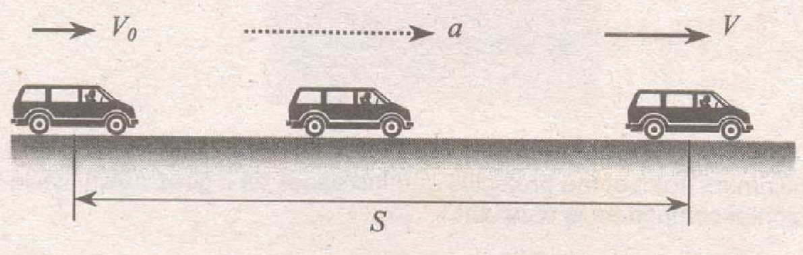
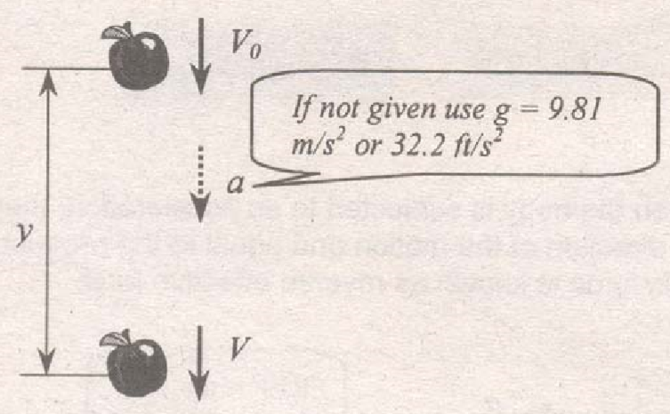
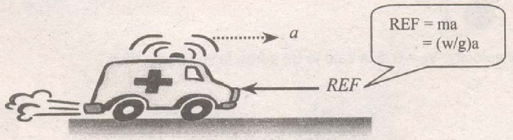

Horizontal motion
$$S=V_{0}t\pm \frac{1}{2}at^{2}$$
$$V=V_{0}\pm at$$
$$V^{2}=V_{0}^{2}\pm 2aS$$
Vertical motion
$$y=V_{0}t\pm\frac{1}{2}gt^{2}$$
$$V=V_{0}\pm gt$$
$$V^{2}=V_{0}^{2}\pm 2gy$$
If initial velocity, $V_{0}$, it is said to be a free falling body, thus,
$$y=\frac{1}{2}gt^{2}$$
Projectile has an equation that of a parabola. The general equation of a projectile is,
$$y=x\tan \theta-\frac{gx^{2}}{2V_{0}^{2}\cos^{2}\theta}$$
The vertical component of the velocity decreases as it goes up and is zero at maximum point of the projectile and increases as it goes down, while the horizontal component is constant.
$$S=r\pi \ \ \ \ \ V=r\omega \ \ \ \ \ a=r\alpha$$
where: S, V and a are linear dimensions, $\theta , \omega , \text{and} \alpha$ are angular distance, velocity and acceleration, respectively. Also,
$$\theta=\omega_{0}t\pm\frac{1}{2}\alpha t^{2}$$
$$\omega=\omega_{0}\pm\alpha t$$
$$\omega^{2}=\omega_{0}^{2}\pm 2\alpha\theta$$
D'Alembert's Principle: When the body is subjected to an acceleration, there exists a force opposite the direction of the motion and equal to the product of mass and acceleration. This force is known as reverse effective force.
$$F_{C}=\frac{WV^{2}}{gr}$$
$$F_{C}=F$$